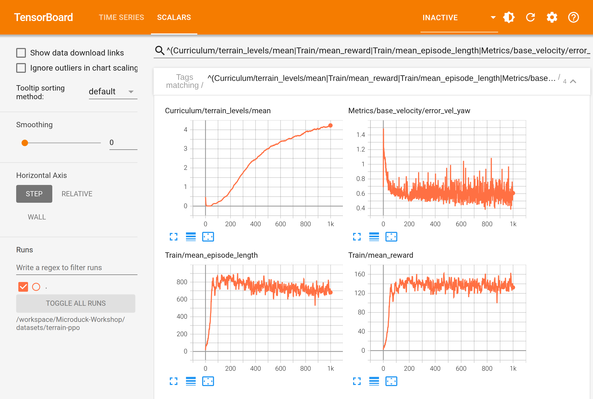

3.4 Extention: Walking steadily on slopes#
Flat-ground training connects velocity tracking, stability and domain randomization. Slopes add changes in foot height and loading. This section continues from the selected policy in Section 3.3, trains on random slopes, and checks direction, arrival and standing on a fixed wooden wedge.
From flat ground to slopes#
NVIDIA's Microduck practical guide describes training with slopes, steps and uneven ground. The GTC Berlin demonstration scene combines ramps, platforms and props into an obstacle course.

Microduck obstacle course from the NVIDIA technical blog. Image source: Figure 6 ↗.
Slopes change relative foot height, the component of gravity along the surface and available friction. Climbing needs more propulsion; descending needs speed control. Instead of prescribing a climbing gait, we expose the policy to these conditions while retaining the useful walking rewards and constraints.
First try the two flat-ground policies#
Place the official walking policy and the flat-ground policy trained in Section 3.3 on the same 15° wedge. Straight walking on level ground does not guarantee successful movement across changes in surface height and loading.
Official walking policy on the left; course flat-ground policy after 1001 iterations on the right. Both use the same wedge, contact parameters, initial-randomization settings and velocity command, aligned by simulation time. Neither reaches the platform within these 20-second trials: the official policy drifts sideways, while the course flat-ground policy stalls near the ramp foot.
Next, start on the platform and check whether the same two flat-ground policies descend into the goal area and remain standing.
Official policy on the left, course flat-ground policy after 1001 iterations on the right. The official policy descends the ramp but misses the goal area; the course flat-ground policy falls during the descent. Completing the task also requires direction control and stable standing in the goal area.
The policy needs experience with propulsion, direction control and balance on slopes. These examples do not imply that both flat-ground policies fail on every slope. Next, continue training with slope experience.
Keep the walking rewards and adapt to slopes#
Training starts from the course 1001-iteration flat-ground checkpoint, loading the Actor, Critic and their observation normalization states. A fresh optimizer with a smaller learning rate performs 1000 continuous slope-adaptation iterations. The Actor already knows how to step, and the Critic retains a useful starting point for evaluating walking states; both continue learning from slope experience.
The main rewards come from the official recipe:
Linear velocity tracking: Compare horizontal velocity with the command in a frame retaining heading but removing body roll and pitch. Leaning on a slope does not directly redefine forward motion.
Turning-rate tracking: Compare angular velocity about the world vertical axis with the turning command. With a zero turning command, persistent rotation reduces reward.
Stability and action quality: Retain uprightness, contact and joint-limit terms, plus an action-change penalty. Body contact or a clear fall promptly resets the episode.
Free head movement: Head-pose commands are zero, but the head joints are not locked. The Actor controls all 14 joints; posture and smoothness penalties remain soft constraints that allow adjustments while walking.
Variable meanings
- \(r_{\omega}\)
- Turning-rate reward, approaching 1 as the tracking error approaches zero.
- \(\exp\)
- The exponential function maps squared error to a smooth reward between 0 and 1.
- \(\omega_z\)
- Actual angular velocity about the world vertical axis (rad/s).
- \(\omega_z^*\)
- Commanded turning rate (rad/s), zero for straight walking.
- \(\sigma\)
- Turning-error tolerance, set to 0.5 rad/s here.
Here \(\htmlData{sym=sigma}{\sigma}\) = 0.5 rad/s. Zero error gives a reward of 1; an error equal to this tolerance gives about 0.37. This constrains turning rate, without directly correcting accumulated heading error. Check lateral displacement during evaluation as well as reward.
1Allow small rotations within a natural gait
Use the official world-frame turning-rate reward with a fixed tolerance of 0.5 rad/s.
cfg.rewards.track_ang_vel.params["std"] = 0.52Retain smoothness and head-posture constraints
Penalize action changes and head-pose bias with the same weights throughout all 1000 iterations. The policy still controls the head.
cfg.rewards.action_rate_l2.weight = -0.2
cfg.rewards.head_pose_bias.weight = -2.0Train continuously on random slopes#
Section 3.3 randomizes friction, mass, actuator delay and observation noise. We retain these variations and add ground shape to the training distribution: 25% flat ground, 37.5% ascending slopes and 37.5% descending slopes, with angles of approximately 1°–20°.
Isaac Lab's terrain curriculum starts on easier tiles and adjusts difficulty according to walking performance. Curriculum/terrain_levels records the mean level. Reward weights, head-command ranges and center-of-mass randomization ranges stay fixed while terrain difficulty changes. Learning therefore uses a consistent scoring rule, though increasing difficulty can still produce normal fluctuations.
Run this in the course container prepared in Section 1.2. It uses the supplied flat-ground checkpoint and matching ONNX with the same training recipe as the fixed slope model; completing your own flat-ground training first is unnecessary. Choose a new output directory.
python3 scripts/run.py train-terrain \
--model datasets/walking-straight/exported/policy.onnx \
--parent-checkpoint datasets/walking-straight/model_1000.pt \
--num-envs 1024 --iterations 1000 \
--show \
--output outputs/terrain-training-01
Parameter details
--model: Matching flat-ground ONNX, used to initialize the Actor and verify numerical agreement with inference.--parent-checkpoint: Flat-ground Actor, Critic and normalization states. Filenames use zero-based indices:model_1000.ptfollows 1001 completed iterations.--num-envs 1024: Train 1,024 environments in parallel.--iterations 1000: Complete 1,000 continuous PPO sampling and update iterations on slopes.--show: Display the training window; rendering adds overhead.--output: Save checkpoints, configuration, TensorBoard logs and exported policies.
Early slope adaptation on the left and training after 1000 iterations on the right. Compare falls, resets and sustained walking. The random training terrain differs from the fixed evaluation wedge.
The command completes all 1000 iterations by default, without an automatic early stop. It saves and exports a policy every 250 iterations, then writes outputs/terrain-training-01/exported/policy.onnx on completion. To observe briefly, stop with Ctrl+C and use a saved export; the evaluation below can also use the supplied course model.
One DGX Spark run recorded approximately 29 minutes in the training loop while diagnostics and recording also ran. Treat this as a waiting-time reference rather than an isolated performance benchmark. Window rendering and other workloads affect the elapsed time.


TensorBoard screenshot of this continuous 1000-iteration run, reading datasets/terrain-ppo/. The horizontal axis shows PPO iterations; smoothing is 0 and outliers are included. Mean terrain level reaches about 4.2. mean_episode_length counts control steps of 0.02 seconds each: the first 50 iterations average about 4.9 seconds and the last 50 about 14.3 seconds. Later terrain is harder, so read episode-length fluctuations alongside terrain level.
Evaluate on a fixed wedge#
Training uses random slopes. Evaluation uses a finite wooden wedge on a white floor: a 0.5 m ramp, a 0.6 m platform and a width of 0.6 m. This complete layout was not part of the training terrain, so it checks whether the learned behavior transfers to another layout.
Uphill: The body reaches 0.15 m beyond the ramp top and both feet enter the platform by at least 0.06 m, then the forward command stops.
Downhill: Start on the platform facing the ramp. The body reaches 0.25 m beyond the ramp foot and both feet reach the flat floor, then the forward command stops.
Both directions: Remain upright in the goal for at least 2 seconds and through the end of the episode, with no fall or reset anywhere in the run.
As in Section 3.3, the robot first settles on the actual contact surface. Temporary joint constraints release after the first policy output is available, and walking starts immediately. At arrival, only the velocity command becomes zero; the policy still controls the head and legs. The evaluation wedge uses a tighter contact response to reduce sole penetration, with the visible wood aligned to the collision surface. Contact parameters affect results and must stay consistent when comparing policies.
After 1000 slope-training iterations: ascent on the left and descent on the right, synchronized by simulation time. Both trials reach the goal and remain standing. Fixed cameras make direction, surface transitions and balance after arrival easy to compare.
Run the following in the course container. The window shows the first environment; the others are simulated alongside it, and the report includes each result.
python3 scripts/run.py terrain \
--model models/terrain-walk.onnx \
--slope 15 --num-envs 5 --seconds 20 \
--output outputs/terrain-uphill
Parameter details
--model: Fixed course slope policy. To test your own trained policy, useoutputs/terrain-training-01/exported/policy.onnx.--slope 15: A 15° ascent. Use-15for descent and choose a different output directory.--num-envs 5: Five independent environments, with randomized initial lateral position within ±2.5 cm and heading within ±0.025 rad.--seconds 20: Run for 20 seconds after takeover, including standing after arrival.--output: Savereport.jsonand the trajectory.
The first validation cohort passed 5/5 at +15° and 5/5 at −15°. A repeat with the same configuration and seed passed 4/5 uphill and 5/5 downhill, with one uphill fall. These small samples vary; a perfect first run is not a reliability guarantee. Different slopes, friction or initial poses also need their own checks. Per-environment results ↗. This policy is used only for the slope exercise; other skills retain their own models.
Check your understanding
Do a higher reward and a successful climbing video establish a reliable slope policy?
Show explanation
No. Return measures how well the policy earns the chosen rewards, and one video shows one episode. Evaluate ascent, descent and standing with consistent contacts, initial randomization and success criteria. Reserve new seeds and layouts that did not guide tuning to test generalization, and check that flat-ground ability remains intact.
Review#
Flat-ground ability provides a starting point, random terrain provides new experience, and velocity and stability rewards guide updates. A fixed wedge checks whether the robot can arrive and remain standing. Section 3.5 compares one-leg standing and basketball balance to explore rewards for other tasks.